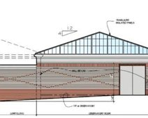
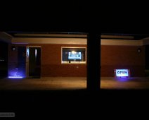
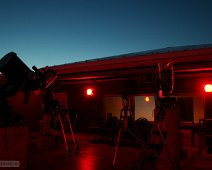

{kind=link}
Early plans for the ONU Observatory.
Early plans for the ONU Observatory. The restroom shelter walls were not used in the end.
{kind=link}
The observatory under construction.
The observatory under construction. 6/13/2010. The Saturn brickwork is done.
{kind=link}
Under construction
Observatory under construction, showing men working in the control room. A blue roof covering makes everything look blue.
{kind=link}
View of turbines west of the observatory.
View of turbines west of the observatory. The wind turbines were constructed around the same time as the ONU Observatory. They suffered damages and were taken…
{kind=link}
Waxing crescent and sunset. 9/10/2010.
Waxing crescent and sunset viewed from outside of the observatory on 9/10/2010.
{kind=link}
Telescopes almost in place. 9/22/2010.
The interior of the finished observatory, with telescopes. From left to right: 8" Meade LT8 (not yet mounted), 12" Meade LX200, 6" Celestron C5.
{kind=link}
Daytime Sun viewing. 10/1/2010
Projecting the Sun with the 6-inch during a daytime tour of the observatory. 10/1/2010.
{kind=link}
Dr. Pinkney at the ONU observatory. 10/1/2010.
Dr. Pinkney during a daytime tour of the observatory. 10/1/2010. The blue telescope is the 12-inch Meade, and the white telescope is an 80mm Meade 8000.
{kind=link}
Dr. Theisen during October 2010 inauguration.
Dr. Theisen (Physics) chats with visitors during the inaugural event at the ONU observatory.
{kind=link}
Telescopes old (blue) and new (white) during 2010 Inaugural event.
The Meade LX200 and Meade Apochromatic Refractor during the 2010 Inaugural event.
{kind=link}
{kind=link}
{kind=link}
A student takes an astrophoto. 12/15/10.
A student takes an astrophoto through the eyepiece of the 12" with the old Canon Rebel XT. 12/15/10. Long exposure by ONU photographer Ken C.
{kind=link}
Night viewing with red lights on. 4/5/11.
The observatory at night, with red lighting to preserve dark adaptation. 4/5/11.
{kind=link}
Observatory with roof retracted. 5/24/11.
The observatory with the roof retracted, ready for a night of astronomy.
{kind=link}
ONU Observatory on vacation in Arizona.
ONU Observatory on vacation in Arizona. (Composite with a star trail taken on Kitt Peak in Arizona.)
{kind=link}
Astronomy students observing on 3/13/12.
Astronomy Club members (and physics majors) pose for a photo at the observatory on 3/13/12.
{kind=link}
Refractor with Sun funnel.
This cheap refractor works well with a sun funnel to observe the sun projected on a plane of wax paper.

{kind=link}
ONU Observatory open for an evening event. 7/6/17.
ONU Observatory open for an evening event on July 6, 2017. Black light lamps are used but most other lights are off to improve night vision.
{kind=link}
{kind=link}
Blocking the Sun to see the sky. 3/8/13.
Blocking the Sun to see the sky. 3/8/13. This is a test for water vapor and dust content in the atmosphere. Deep blue is best for astronomy. 1/500 second…

{kind=link}
Twilight sky at the ONU Observatory. 6/2/15.
Twilight sky at the ONU Observatory. 6/2/15.
{kind=link}
CCD astrophotography setup.
CCD astrophotography setup. The Atik CCD (red) is at the Cassegrain focus of the Celestron 11-inch Edge HD. 8/19/16.
{kind=link}
Students viewing planets during the day.
Students viewing planets during the day. 8/27/16. Venus and Jupiter were both seen while the Sun was above the horizon. (But you must point this telescope at…
{kind=link}
Use of a focal reducer.
Use of a focal reducer. between the 12-inch and the Canon T5i. This increases the field of view.
{kind=link}
Canon camera on the 12-inch Meade.
Canon T5i camera at the cassegrain focus of the 12-inch Meade. The Telrad finder is visible on the right. 8/7/17.
{kind=link}
Celestron telescope with apochromatic refractor riding high.
Celestron 11-inch telescope with apochromatic refractor riding high.
{kind=link}
{kind=link}